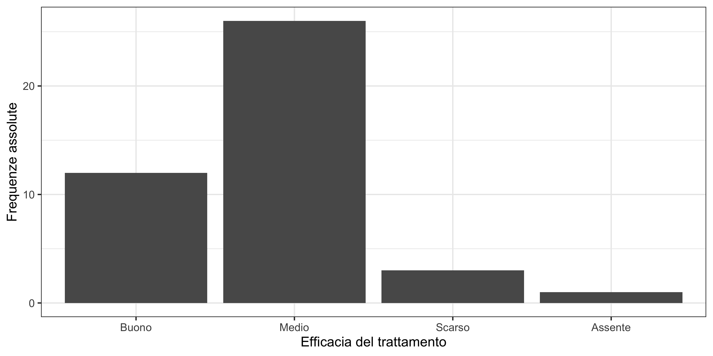

Statistica I
Esercitazione 4: dati qualitativi, eterogeneità
Homepage
Alcuni dei problemi di questa esercitazione non sono stati svolti a lezione. Si consiglia agli studenti di provare a risolvere i problemi autonomamente.
Litrotripsia extracorporea
La litrotripsia extracorporea è un trattamento relativamente poco gravoso per il paziente per la calcolosi.
Per valutarne l’efficiacia nel caso della calcolosi uretrale la risposta di n = 80 pazienti è stata rilevata utilizzando la seguente scala di modalità che si riferisce al grado di frammentazione dei calcoli dopo la prima seduta di trattamento:
- Buono: tutti i frammenti sono più piccoli di 3mm.
- Medio: nessun frammento sopra i 5mm, almeno uno maggiore di 3mm.
- Scarso: frammenti maggiori di 5mm.
- Assente: nessun segno di frammentazione deicalcoli originari.
Per ogni paziente è poi noto l’uretere (lombare, presacrale o pelvico) dove si erano formati i calcoli. I dati sono riassunti nella seguente tabella
| Buono | Medio | Scarso | Assente | |
|---|---|---|---|---|
| Lombare | 12 | 26 | 3 | 1 |
| Pre-sacrale | 2 | 8 | 0 | 0 |
| Pelvico | 12 | 13 | 2 | 1 |
Qual è la moda della variabile “efficacia del trattamento” per i pazienti con calcolosi Lombare? Si produca un grafico a supporto della risposta.
Si ottengano gli indici di eterogeneità (normalizzati) di Gini e l’entropia, nei tre casi.
Quale uretere è meno variabile in termini di efficacia del trattamento?
Concentrazione del mercato
La tabella seguente riporta le quote di mercato dei principali produttori di energia elettrica in Italia nel 2000. In relazione a un mercato, gli indici di eterogeneità possono essere pensati come una misura del grado di concorrenza nel mercato stesso. Si valuti l’eterogeneità con appositi indici.
| Operatore | TWh (TeraWattora) | Quota percentuale |
|---|---|---|
| Enel prod. | 125.204 | 53.07 |
| Erga | 7.513 | 3.18 |
| Valgen | 0.127 | 0.05 |
| Eurogen | 22.471 | 9.52 |
| Elettrogen | 7.576 | 3.21 |
| Interpower | 19.636 | 8.32 |
| Edison | 17.254 | 7.31 |
| Sondel | 6.265 | 2.66 |
| Altri | 29.880 | 12.66 |
Tifosi e squadre di calcio
Da un sondaggio condotto da un giornale sportivo in due regioni sul tifo per le principali squadre di calcio si sono ottenuti i risultati che seguono:
| Tifosi Inter | Tifosi Milan | Tifosi Torino | Tifosi Juventus | |
|---|---|---|---|---|
| Piemonte | 331 | 450 | 675 | 2354 |
| Lombardia | 2125 | 3374 | 591 | 721 |
Qual è la moda nelle due regioni?
In quale delle due regioni c’è più omogeneità? Rispondere calcolando opportuni indici.
Rappresentare graficamente i dati.
Schema della soluzione
La moda, ovvero la modalità con frequenza più elevata, è “Juventus” per la regione Piemonte mentre è “Milan” per la regione Lombardia.
I calcoli necessari per valutare gli indici di Gini e di entropia sono riportati nelle tabelle che seguono.
Regione Piemonte
| f_j | f_j^2 | \log{f_j} | f_j \log{f_j} | |
|---|---|---|---|---|
| Inter | 0.0869 | 0.0075 | -2.4433 | -0.2123 |
| Milan | 0.1181 | 0.0140 | -2.1361 | -0.2523 |
| Torino | 0.1772 | 0.0314 | -1.7307 | -0.3066 |
| Juventus | 0.6178 | 0.3817 | -0.4815 | -0.2975 |
| Totale | 1 | 0.4346 | -1.0687 |
Regione Lombardia
| f_j | f_j^2 | \log{f_j} | f_j \log{f_j} | |
|---|---|---|---|---|
| Inter | 0.3120 | 0.0973 | -1.1648 | -0.3634 |
| Milan | 0.4954 | 0.2454 | -0.7024 | -0.3480 |
| Torino | 0.0868 | 0.0075 | -2.4445 | -0.2121 |
| Juventus | 0.1059 | 0.0112 | -2.2457 | -0.2377 |
| Totale | 1 | 0.3615 | -1.1612 |
Pertanto, l’indice di Gini per Piemonte e Lombardia sono pari a
G_\text{Piem} = 1 - 0.43 = 0.57, \qquad G_\text{Lomb} = 1 - 0.36 = 0.64. Gli indici normalizzati, in entrambi i casi, si ottengono moltiplicando i rispettivi indici per 4/3, ottenendo 0.76 per il Piemonte e 0.85 per la Lombardia. L’entropia per piemonte e Lombardia sono invece pari a:
H_\text{Piem} = 1.07, \qquad H_\text{Lomb} = 1.16.
I corrispettivi indici relativi si ottengono dividendo entrambi i termini per \log{4} \approx 1.39. Ne risulta 0.77 per il Piemonte e 0.84 per la Lombardia.
Quindi, entrambi gli indici normalizzati suggeriscono che il Piemonte è più omogeneo (meno variabile) in termini di tifoserie.
Una possibile rappresentazione grafica è costituita dai diagrammi a barre, che sono riportati nel seguito. Per facilitare il confronto tra le due regioni, sono state usate le frequenze relative.